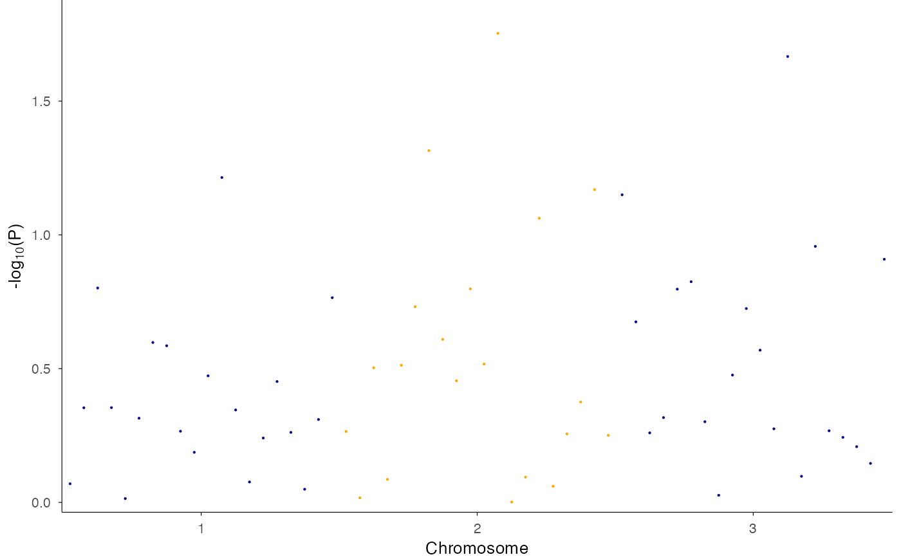
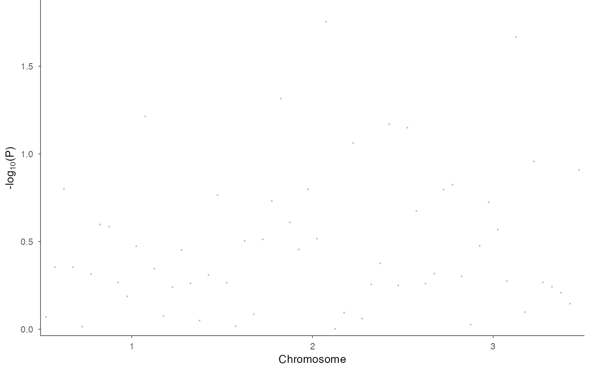

This function creates a Manhattan plot from GWAS (Genome-Wide Association Study) data, visualizing p-values across the entire genome with chromosomes displayed along the x-axis using cumulative positions and alternating colors.
For regional association plots (LocusZoom-style) focused on a single locus,
use ez_locusZoom() instead.
Usage
ez_manhattan(
input,
chr = NULL,
bp = NULL,
p = NULL,
snp = NULL,
track_labels = NULL,
group_var = NULL,
logp = TRUE,
size = 0.5,
colors = c("grey", "skyblue"),
highlight_snps = NULL,
highlight_color = "purple",
threshold_p = NULL,
threshold_color = "red",
threshold_linetype = 2,
facet_label_position = c("top", "left"),
region = NULL,
gene = NULL,
...
)Arguments
- input
A data frame or named list of data frames containing GWAS results with columns for chromosome, position, p-values, and optionally SNP names. Must contain data from multiple chromosomes. Supports both GWAS-style (CHR, BP, P) and GRanges-style (seqnames, start, pvalue) column naming.
- chr
Character string specifying the column name for chromosome numbers. Default: auto-detect from "CHR", "seqnames", "chrom", etc.
- bp
Character string specifying the column name for base pair positions. Default: auto-detect from "BP", "start", "pos", etc.
- p
Character string specifying the column name for p-values. Default: auto-detect from "P", "pvalue", "p.value", etc.
- snp
Character string specifying the column name for SNP identifiers. Default: auto-detect from "SNP", "rsid", "variant_id", etc.
- track_labels
Optional vector of track labels (used for unnamed list input). Default: NULL.
- group_var
Column name for grouping data within a single data frame. Default: NULL.
- logp
Logical indicating whether to plot -log10(p-values). Default: TRUE.
- size
Numeric value for point size in the plot. Default: 0.5.
- colors
Vector of colors for alternating chromosomes. Default:
c("grey", "skyblue").- highlight_snps
Character vector of SNP IDs to highlight. Default: NULL.
- highlight_color
Color for highlighting significant SNPs. Default: "purple".
- threshold_p
Numeric p-value threshold for drawing a significance line (e.g., 5e-8 for genome-wide significance). If NULL, no line is drawn. Default: NULL.
- threshold_color
Color for the significance threshold line. Default: "red".
- threshold_linetype
Linetype for the significance threshold line. Default: 2 (dashed).
- facet_label_position
Position of facet labels for multi-track plots: "top" or "left". Default: "top".
- region
Deprecated. Use
ez_locusZoom()for regional plots.- gene
Deprecated. Use
ez_locusZoom()for regional plots.- ...
Additional arguments passed to
geom_manhattan().
Details
This function creates a genome-wide Manhattan plot for GWAS results across multiple chromosomes. It is a wrapper around geom_manhattan that provides a flexible interface with support for grouping and multiple tracks.
The function creates a genome-wide Manhattan plot with:
Chromosomes displayed along the x-axis with cumulative positions
Alternating colors for adjacent chromosomes (customizable via
colors)-log10(p-values) on the y-axis
Optional significance threshold line
Optional SNP highlighting
For multiple tracks (via named list), plots are stacked vertically using facets. For grouped data (via group_var), colors distinguish different groups.
Regional plots
For LocusZoom-style regional association plots with LD coloring, gene lookup,
and stackability with other tracks, use ez_locusZoom() instead.
See also
ez_locusZoom for regional association plots,
geom_manhattan for the underlying geom
Examples
# Basic genome-wide Manhattan plot
df <- data.frame(
CHR = rep(1:3, each = 20),
BP = rep(1:20, 3) * 1000,
P = runif(60, 0.0001, 1),
SNP = paste0("rs", 1:60)
)
ez_manhattan(df)
# With alternating chromosome colors
ez_manhattan(df, colors = c("navy", "orange"))

# With significance threshold
ez_manhattan(df, threshold_p = 5e-8)
#> Warning: Removed 1 row containing missing values or values outside the scale range (`geom_hline()`).
